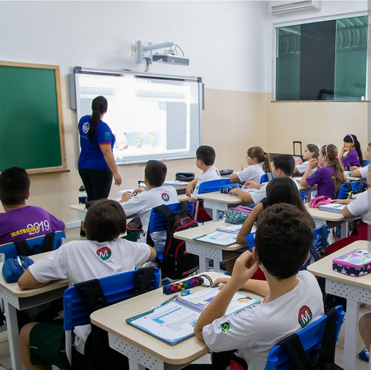
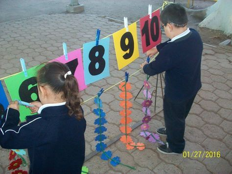
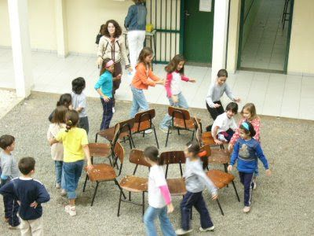
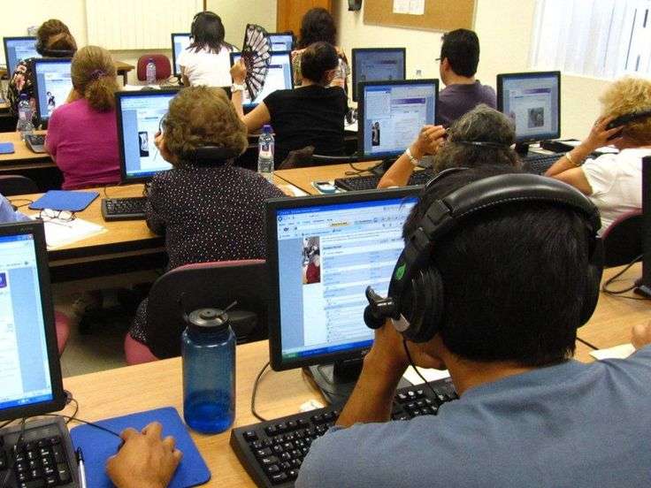

Destaque
Educação Para Todos
Categoria: Educação
Programa de reforço escolar e alfabetização para crianças e adolescentes de 6 a 14 anos em situação de vulnerabilidade social. Oferecemos aulas de português, matemática, informática e atividades culturais.
Indicadores de Impacto
- ✓ 450 crianças atendidas mensalmente
- ✓ 85% de melhoria no desempenho escolar
- ✓ 95% de redução na evasão escolar
- ✓ 30 voluntários educadores envolvidos
Resultados Alcançados
- Aumento de 40% na aprovação escolar dos alunos participantes
- 120 alunos aprovados em escolas técnicas em 2023
- Redução de 60% nos índices de repetência
Galeria de Fotos


